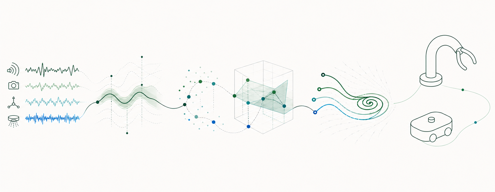

Estimation and Observer Theory
Real-time state estimation for nonlinear control systems, with an emphasis on convergence guarantees and robustness.
- Nonlinear observers: KKL, PEBO, DREM
- Adaptive observers
- Sensorless control
My research develops theory and algorithms for estimation, learning, and control of nonlinear dynamical systems, with a strong emphasis on robotics and autonomous systems. The goal is to combine mathematically rigorous guarantees with methods that remain useful on real-world platforms.

Real-time state estimation for nonlinear control systems, with an emphasis on convergence guarantees and robustness.
Data-driven models for dynamical systems that connect system identification with modern learning theory.
Control design for uncertain nonlinear systems, drawing on structural and energy-based viewpoints.
Estimation, learning, and control methods for robotic systems operating in complex and uncertain environments.
A tutorial introduction to observer design through parameter estimation.
View PDFSelected slides on observer design and nonlinear estimation.
View PDFLearning representations and models for nonlinear dynamical systems.
View PDFNonlinear methods for stabilizing periodic motions and target orbits.
View PDFSelected work connecting nonlinear systems theory and robotics.
View PDFExplore related work, people, and opportunities.